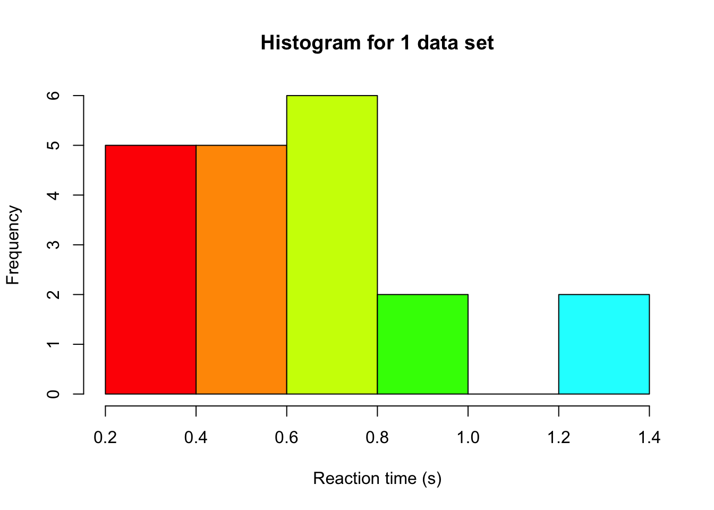
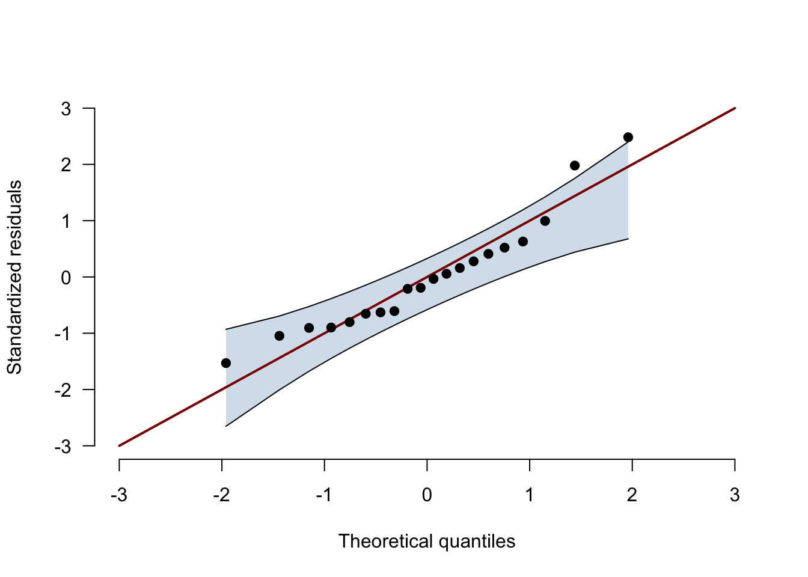

In the ANOVA version of this text, we simulated data with some very extreme values, which mostly messed with the variance. This time we look at a different problem, namely a small sample from a distribution that is clearly not normal. We will again use reaction times, because they are a classic example of skewed data. Nobody can respond faster than a certain minimum, most people respond fairly quickly, and every now and then someone takes much longer (maybe they sneezed, or were thinking about lunch). That gives the distribution a long tail to the right.
We compare three tests, all of which you can find under Tests in JASP’s independent samples t-test:
Student’s t-test, which assumes normally distributed residuals and equal variances
Welch’s t-test, which drops the assumption of equal variances
The Wilcoxon rank-sum test (called Mann-Whitney in JASP), which works on the ranks of the data instead of the data themselves
For each test we look at two kinds of errors. The Type I error rate is how often a test rejects H0 when there is no effect, and we want this to be 5% (our α). The Type II error rate is how often a test fails to reject H0 when there is an effect, and we want this to be as small as possible. One minus the Type II error rate is the power of the test.
Simulating a single data set
We start with one data set of two groups (A and B), with 10 participants each. We draw the reaction times (in seconds) from a shifted log-normal distribution, which is a popular model for reaction times. Don’t worry about the name, it is the shape that matters here. In the code below, 0.2 s is the fastest anyone can respond, and the median reaction time is 0.5 s. Both groups get the same distribution, because we operate under H0 (no difference between the groups).
set.seed(1) # for reproducibilitygroupN <-10# sample size per group# a function that draws n reaction times: 0.2 s plus a log-normal part with a median of 0.3 ssimulateRT <-function(n) {0.2+rlnorm(n, meanlog =log(0.3), sdlog =0.8)}groupA <-simulateRT(groupN)groupB <-simulateRT(groupN) # same distribution as group A, because H0 is truehist(c(groupA, groupB), col =rainbow(10), xlab ="Reaction time (s)", main ="Histogram for 1 data set")

With only 20 observations, a histogram is hard to read. A better tool is the Q-Q plot of the residuals with its confidence band, which you can get in JASP under Assumption Checks → Q-Q plot residuals → Confidence interval. The residuals are the observations minus their group mean, and JASP standardizes them (turns them into z-scores). The function below draws the same plot as JASP does. You don’t need to understand every line of it.
qqPlotWithBand <-function(residuals, ciLevel =0.95) { z <-sort(as.numeric(scale(residuals))) # standardized residuals, from smallest to largest n <-length(z) i <-1:n theoretical <-qnorm(ppoints(n)) # where the points would be for perfectly normal data# the confidence band, computed the same way as in JASP (jaspGraphs::plotQQnorm) slope <-diff(quantile(z, c(0.25, 0.75), names =FALSE)) /diff(qnorm(c(0.25, 0.75))) intercept <-quantile(z, 0.25, names =FALSE) - slope *qnorm(0.25) alpha <-1- ciLevel lower <- intercept + slope *qnorm(qbeta(alpha /2, i, n - i +1)) upper <- intercept + slope *qnorm(qbeta(1- alpha /2, i, n - i +1)) axisRange <-range(pretty(c(theoretical, z, lower, upper))) # same range on both axesplot(theoretical, z, type ="n", xlim = axisRange, ylim = axisRange, bty ="n", las =1,xlab ="Theoretical quantiles", ylab ="Standardized residuals")polygon(c(theoretical, rev(theoretical)), c(lower, rev(upper)),col =adjustcolor("steelblue", alpha.f =0.25), border =NA)lines(theoretical, lower)lines(theoretical, upper)segments(axisRange[1], axisRange[1], axisRange[2], axisRange[2], col ="darkred", lwd =2) # the line y = xpoints(theoretical, z, pch =19)invisible(sum(z < lower | z > upper)) # the number of points outside the band}
residualsAB <-c(groupA -mean(groupA), groupB -mean(groupB)) # each observation minus its group meannOutside <-qqPlotWithBand(residualsAB)

nOutside
[1] 2
If the residuals were normally distributed, the points would follow the red line and stay inside the blue band. Here 2 points fall outside the band, at the top right where the slowest responses are. Together the points form the curve that is typical of a long right tail. The largest residuals shoot up above the line (the slow responses), while the smallest residuals also sit above the line, because nobody can respond faster than 0.2 s.
Now we can run our three tests on this single data set:
pStudent <-t.test(groupA, groupB, var.equal =TRUE)$p.valuepWelch <-t.test(groupA, groupB)$p.value # Welch is the default in RpWilcoxon <-wilcox.test(groupA, groupB)$p.valueround(c(Student = pStudent, Welch = pWelch, Wilcoxon = pWilcoxon), 3)
Student Welch Wilcoxon
0.597 0.597 0.436
None of the three tests rejects H0 at α = 0.05, which is good news, because we know that H0 is true. But one data set does not tell us much about how the tests behave in the long run. For that, we need many data sets.
Simulating many data sets: Type I errors
Just like in the ANOVA text, we repeat the steps above 100,000 times and keep track of how often each test rejects H0. This time we put the loop in a function, so we can reuse it later. The argument shift adds a constant to every reaction time in group B. For now we set it to 0, so H0 is true.
rejectionRate <-function(nSims, shift, simulateData) { rejected <-matrix(NA, nrow = nSims, ncol =3,dimnames =list(NULL, c("Student", "Welch", "Wilcoxon")))for (i in1:nSims) { groupA <-simulateData(groupN) groupB <-simulateData(groupN) + shift rejected[i, ] <-c(t.test(groupA, groupB, var.equal =TRUE)$p.value,t.test(groupA, groupB)$p.value,wilcox.test(groupA, groupB)$p.value) <0.05 }colMeans(rejected) # the proportion of data sets in which each test rejected H0}nSims <-1e5typeIRate <-rejectionRate(nSims, shift =0, simulateData = simulateRT)round(typeIRate, 3)
Student Welch Wilcoxon
0.039 0.033 0.043
We simulated under H0, so every rejection is a Type I error. If the tests work as advertised, each rate should be close to 0.05.
The Wilcoxon test comes in at 0.043. That is no coincidence. Under H0 both groups come from the same distribution, so every way of dividing the ranks 1 to 20 over the two groups is equally likely, whatever the shape of that distribution. In other words, the sampling distribution of the rank sum is known exactly, even for skewed data. (It lands slightly below 5% because with 10 people per group, the p-value can only take on a limited set of values.)
The two t-tests reject H0 less often than they should, at 0.039 (Student) and 0.033 (Welch). Just like in the ANOVA text, fewer Type I errors might sound like good news, but it means that the t-distribution is not quite the right sampling distribution for our t-values. Notice also that Welch’s t-test does not help here. It is even a bit more conservative. That makes sense once you remember what Welch is for. It corrects for unequal variances, and our two groups come from the same distribution, so there is nothing to correct. Welch is a solution to a different problem than skewness.
To see whether being conservative costs us anything, we need to look at what happens when there is an effect.
Simulating many data sets: Type II errors
Next, we make H0 false. We add 0.25 s (250 ms) to every reaction time in group B, so group B is slower than group A. Every rejection is now a correct decision, and every failure to reject is a Type II error.
power <-rejectionRate(nSims, shift =0.25, simulateData = simulateRT)round(rbind(Power = power, `Type II error rate`=1- power), 3)
Student Welch Wilcoxon
Power 0.4 0.389 0.548
Type II error rate 0.6 0.611 0.452
Now the Wilcoxon test is the clear winner. It detects the effect in 55% of the data sets, compared to 40% for Student’s t-test and 39% for Welch’s t-test. The slow responses in the long tail inflate the standard deviation of each group, which makes the t-statistic smaller. Ranking the data limits the influence of those slow responses (a reaction time of 3 s simply becomes rank 20, see §15.2 in the book), so the Wilcoxon test is less distracted by them.
This is the point of Jane Superbrain Box 15.1 in the book. People often say that nonparametric tests have less power than their parametric counterparts, but that is only true when the assumptions of the parametric test are met.
What if the data were normal?
To make that last point concrete, we run the same two simulations once more, but now with normally distributed reaction times that have the same mean and standard deviation as our shifted log-normal ones. (Such a normal distribution would occasionally produce a negative reaction time, which is one more reason why reaction times are not normal, but the tests don’t mind.)
bigSample <-simulateRT(1e6) # one huge sample, to get the mean and sd of our reaction time distributionrtMean <-mean(bigSample)rtSD <-sd(bigSample)simulateNormalRT <-function(n) {rnorm(n, mean = rtMean, sd = rtSD)}typeIRateNormal <-rejectionRate(nSims, shift =0, simulateData = simulateNormalRT)powerNormal <-rejectionRate(nSims, shift =0.25, simulateData = simulateNormalRT)summaryTable <-data.frame(Data =c("Reaction times", "Reaction times", "Normal", "Normal"),Rate =c("Type I error", "Power", "Type I error", "Power"),rbind(typeIRate, power, typeIRateNormal, powerNormal))knitr::kable(summaryTable, digits =3, row.names =FALSE)
Data
Rate
Student
Welch
Wilcoxon
Reaction times
Type I error
0.039
0.033
0.043
Reaction times
Power
0.400
0.389
0.548
Normal
Type I error
0.051
0.049
0.044
Normal
Power
0.271
0.266
0.239
With normal data, the tables turn. Student’s t-test now has a Type I error rate of (almost exactly) 5%, and it has a bit more power than the Wilcoxon test (27% versus 24%). So when the assumptions hold, the t-test is the better choice. But compare the size of the differences. With normal data, the Wilcoxon test trails the t-test by 3 percentage points, while with our reaction times, the t-test trails the Wilcoxon test by 15 percentage points.
You might also notice that all tests have more power with the reaction times than with the normal data, even though the shift and the standard deviation are the same. That is because most reaction times are packed closely together near the median, and the standard deviation is largely driven by a few slow responses. A shift of 0.25 s therefore stands out more against the bulk of the reaction times than against the normal data.
Concluding thoughts
With small, skewed samples, both t-tests keep their Type I error rate below 5%, but they have clearly less power than the Wilcoxon test.
The Wilcoxon rank-sum test (Mann-Whitney) keeps its Type I error rate just below 5% for any continuous distribution, and with our reaction times it detected the effect much more often.
Welch’s t-test protects against unequal variances, not against skewness. With equal variances it behaves just like Student’s t-test.
With normal data the t-test has the edge, just as Jane Superbrain Box 15.1 says.
In practice, the Q-Q plot of the residuals with its confidence band is how you spot this. In a small sample, points outside the band are a reason to consider a nonparametric test.